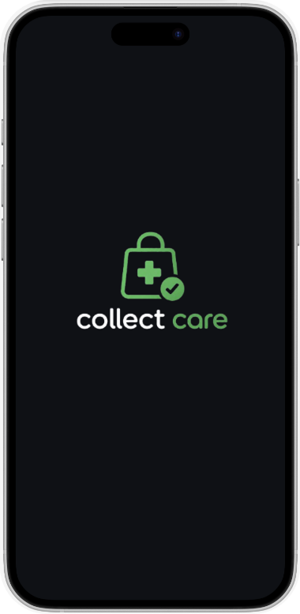
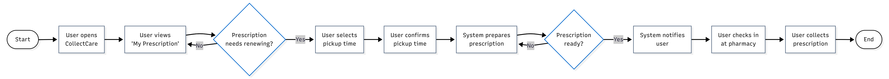
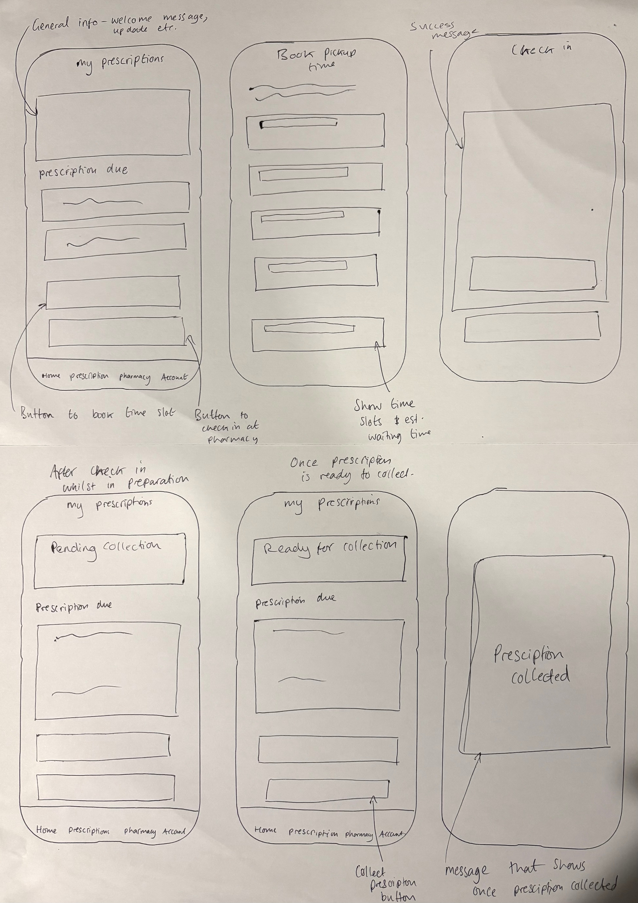
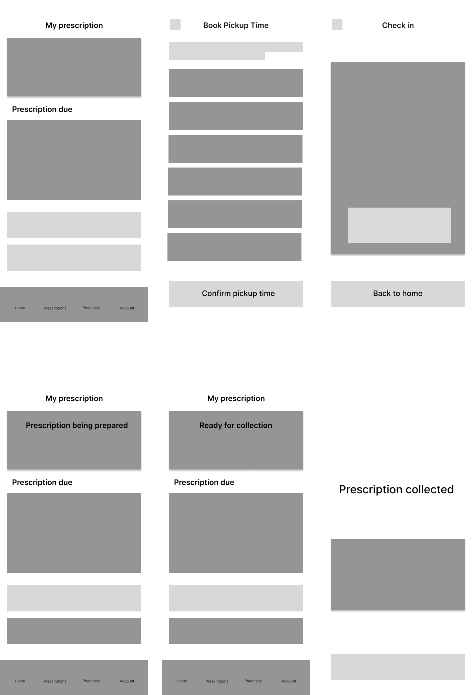
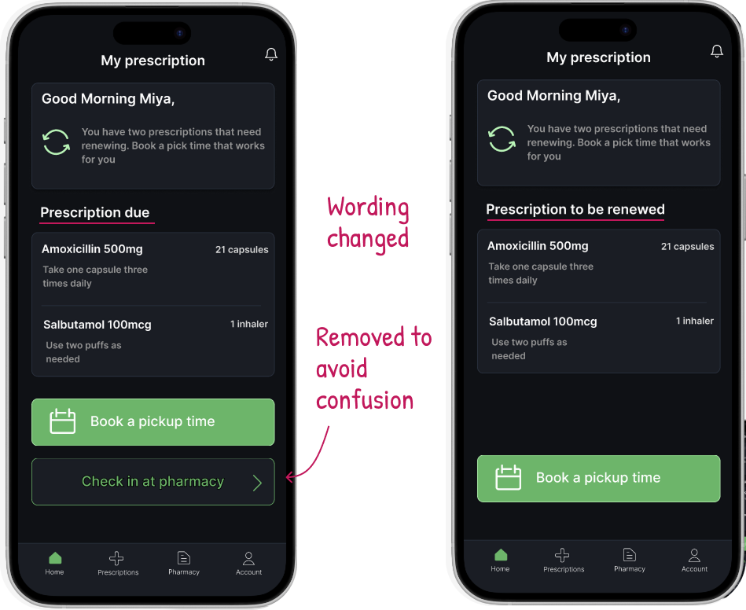
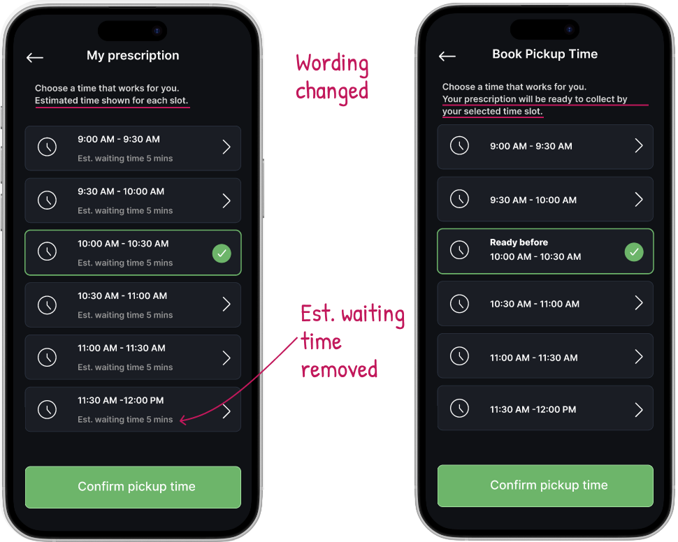
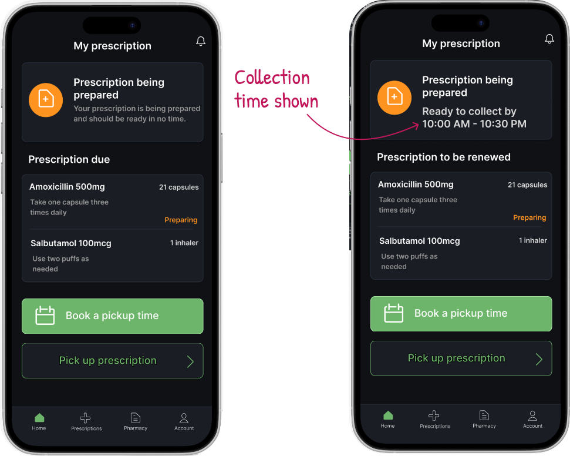
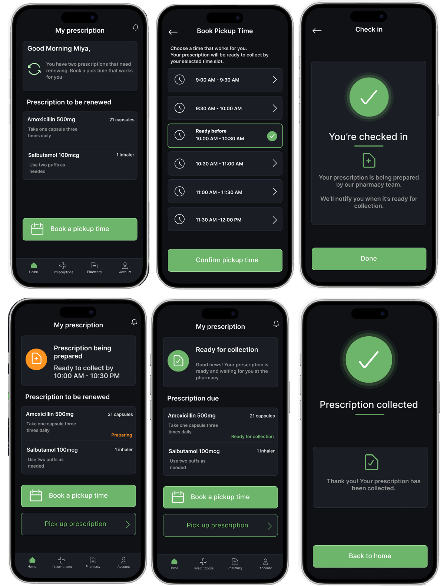

Mobile UX & Systems Design
CollectCare — Improving the Prescription Pickup Experience
Overview
CollectCare is a mobile concept designed to make prescription collection predictable and completely queue-free. The goal was to give users clear updates, remove uncertainty, and let them collect medication without waiting.
People often arrive at pharmacies unsure whether their prescription is ready. This leads to unnecessary waiting, repeated trips, and confusion about next steps.

Problem Statement
Users need a clearer, more predictable way to collect prescriptions without waiting.
Research & Insights
I visited a local GP surgery and spoke with reception staff about how prescriptions are processed and why delays happen.
Key Insights from Staff
- 01 / Patients frequently arrive before prescriptions are prepared.
- 02 / Staff spend time repeating the same information (It is not ready yet).
- 03 / There is no real-time communication between pharmacy and patient.
- 04 / Many patients assume sent to pharmacy means ready to collect.
Competitor Analysis
I analysed several existing applications to understand what they do well and where they fall short:
NHS App
Shows prescription history and lets users request repeats. However, there is no real-time status and no indication of when medication will actually be ready.
Pharmacy2U
Good repeat prescription management but entirely delivery focused. It lacks an in-person pickup flow or a time slot system.
Boots App
Shows order status and offers click-and-collect options. Unfortunately, status updates are vague and users still often queue.
Well Pharmacy App
Provides clearer status steps but gives no guaranteed pickup time and lacks a ready-before-you-arrive promise.
Key Gaps Across Competitors
- No application guarantees a queue-free pickup.
- Status wording is often unclear or delayed.
- None show exactly when the prescription will be ready.
- No application supports a time-slot model for predictable collection.
Design Approach
User Flow Map
Before sketching, I mapped out the core journey to ensure the path from notification to pickup felt seamless.

Low Fidelity
I started with low-fi wireframes to focus on structure, flow, decision points, and user journey clarity without getting distracted by UI polish.

Mid Fidelity
Mid-fi helped refine hierarchy, spacing, button placement, copy, and interaction logic to clarify initial user misunderstandings.

Usability Testing & Key Iterations
Testing iteration refinements
1. Wording adjustments for due status
Users did not know if prescription due meant ready for collection or needing renewal. I updated this label to: Prescription to be renewed.
2. Pharmacy check-in timing
Users questioned why they could check in before choosing a time. I removed the button until a slot is booked or the prescription is ready.

3. Waiting time labels
Testers noted that displaying a waiting time felt confusing when booking a specific slot. I removed all waiting time labels and replaced the header with: Your prescription will be ready to collect before your selected time slot.
4. Streamlining time slot cards
Removing waiting times made the individual slot cards much cleaner and easier to scan quickly.

5. Displaying selected times
Several testers wanted to see their chosen slot again to ensure they did not forget. I added a permanent collection time banner at the top of the main page after a slot is selected.

Final Design
The final interface design is calm, clear, and highly predictable.

Reflection
This project showed me how much clarity and wording matter. Speaking to real staff, analysing existing applications, and testing early helped me design an experience that genuinely reduces uncertainty. Small changes, like removing waiting times or rewriting a label, made the entire app feel far more intuitive and trustworthy.